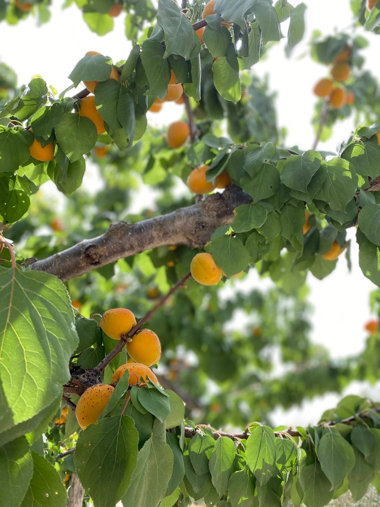
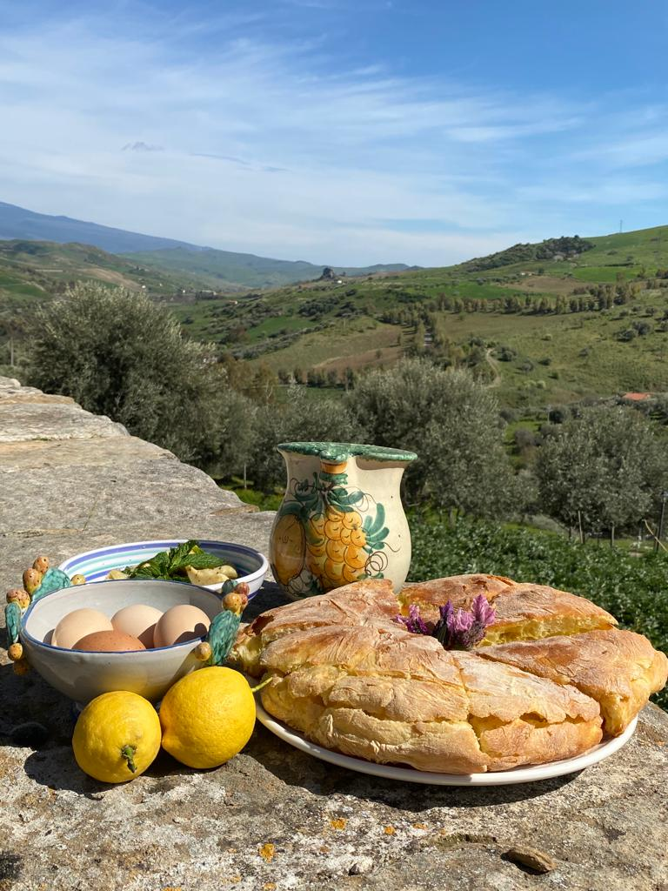
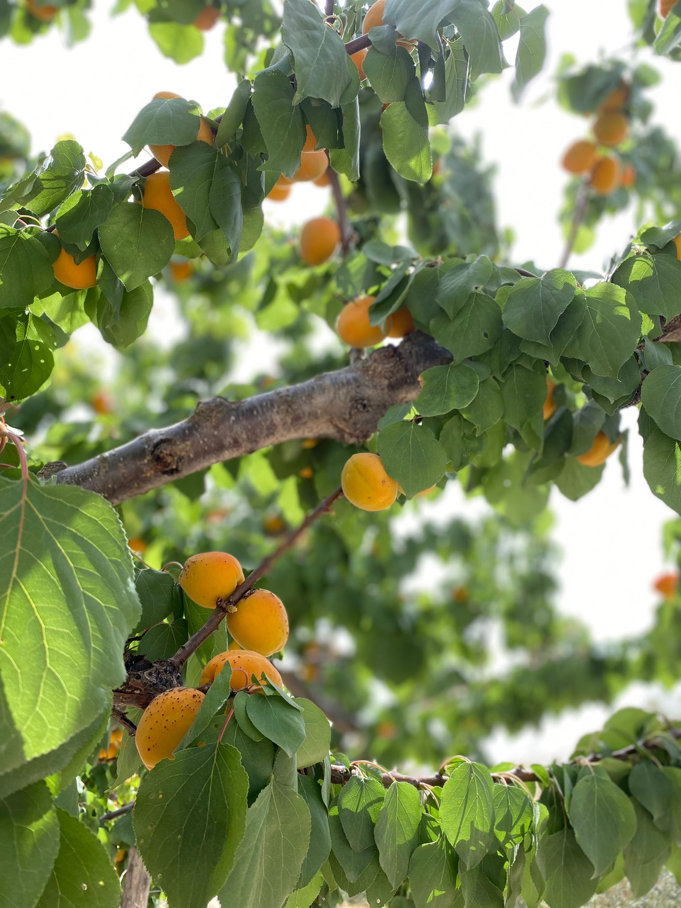
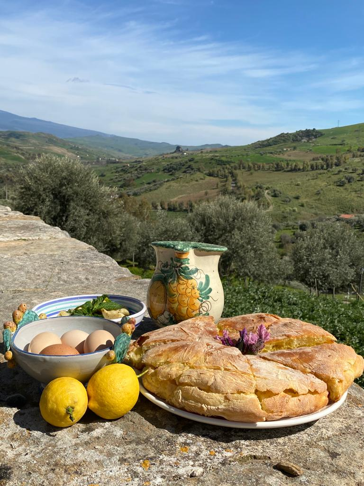

Nel cuore delle terre di Sicilia, nel comune di Troina, prima capitale normanna dell’isola, nasce l'olio
extravergine di oliva “Don Tano di Cota”.
L’azienda agricola si sviluppa lungo il pendio di una dolce collina, ove le antiche cultivar di Biancolilla,
Minuta, Moresca, Giarraffa e Nocellara Etnea vegetano rigogliose, esposte a sud-est e rivolte verso l'Etna.
L’intensa esposizione alla luce del sole del mattino e del mezzogiorno, la dolce influenza dell'Etna e l'antica
e segreta formula del blend, rendono quest'olio unico nel panorama degli oli siciliani.

L’azienda agricola frange esclusivamente le proprie olive - 100% siciliane - raccolte
manualmente dagli alberi della tenuta nel periodo tra novembre e dicembre.
Entro poche ore dalla raccolta le olive vengono molite con le più moderne tecnologie a
freddo.
L’olio viene conservato in botti di acciaio in una cantina sotterranea, in totale assenza di luce
solare e a temperatura costante, affinché possa consolidare e rafforzare le sue caratteristiche
organolettiche.
Dedichiamo la massima attenzione e cura all’intera fase di produzione fino
all’imbottigliamento e ci assicuriamo che la fase di spedizione rispetti alti standard di qualità.

Richiedi un preventivo gratuitamente e senza impegno. Spediamo i nostri oli d'oliva in tutta Italia.